Activity: Creating both ordered and synchronous features in a model
This activity guides you through the process of creating both ordered and synchronous features in a model. Learn how to edit both feature types and how to convert an ordered feature to a synchronous feature.
Create a new part document.
Switch to the Synchronous environment. See the previous activity (Creating ordered features) if you need help switching modeling environments.
-
Create an extrusion with the cross-section shown. Extend symmetrically at a distance of 100 mm.
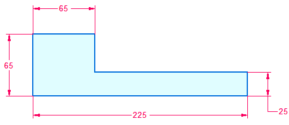
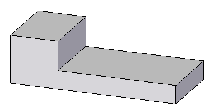
Transition to the ordered environment.
Create an extrusion with the cross-section shown. Extend upward at a distance of 100 mm. Draw the cross-section on the green face.
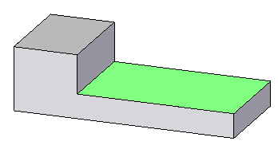
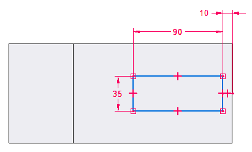
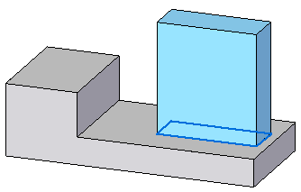
Move the green face on the synchronous feature. The ordered feature is colored orange for clarity only.
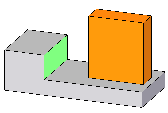
Select the green face.
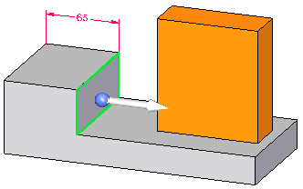
Select the move handle and drag the face in an area around the ordered feature. Notice how the ordered feature is recognized during an edit. Press Escape to end the move operation.
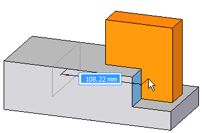
Select the green face.
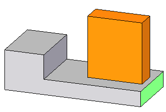
Select the move handle and drag the face to the right. Notice how the ordered feature moves with face. This occurs because the ordered feature sketch was dimensionally locked to the synchronous feature edge. Press Escape to end the move operation.
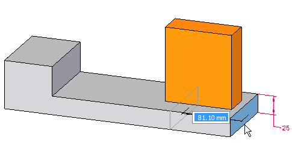
-
Switch to the synchronous environment. Notice the ordered feature has a transparent display.
Switch to the ordered environment.
Select the ordered feature.
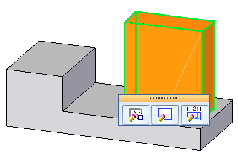
Click the Dynamic Edit button. Change the 35 mm dimension to 70 mm.
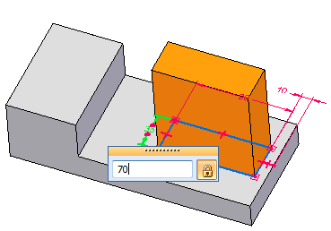
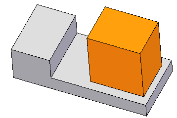
An ordered feature converts to a synchronous feature by moving the ordered feature to the synchronous portion of the PathFinder. Once converted, all dimensions are dropped. The converted feature can be manipulated as an entire synchronous feature or have individual face(s) manipulated.
You must be in the ordered environment to convert ordered features. In PathFinder, right-click the ordered protrusion feature.
On the shortcut menu, choose the Move to Synchronous command.
In PathFinder, select the converted protrusion.
Click the move handle and move feature to the approximate location shown and click. Press Escape.
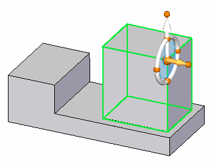
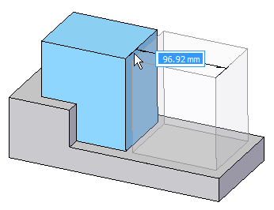
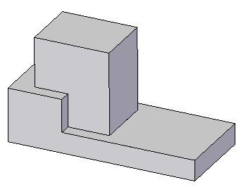
This completes the activity.
In this activity you learned how to create both ordered and synchronous features in a single model. You also learned how to edit both feature types and how to convert an ordered feature to a synchronous feature.
-
Click the Close button in the upper–right corner of this activity window.